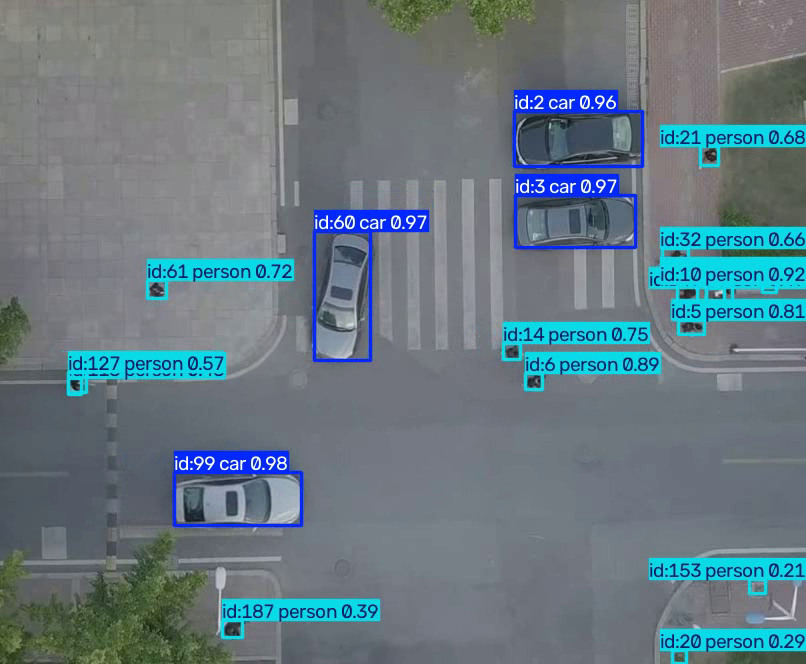
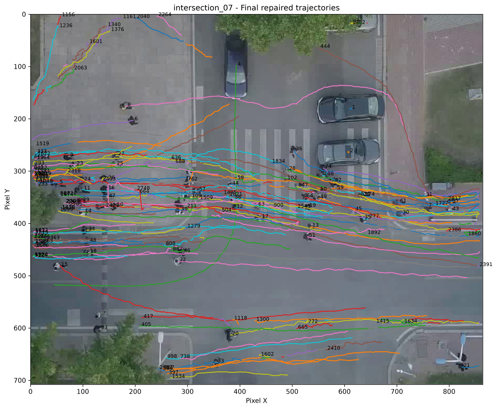
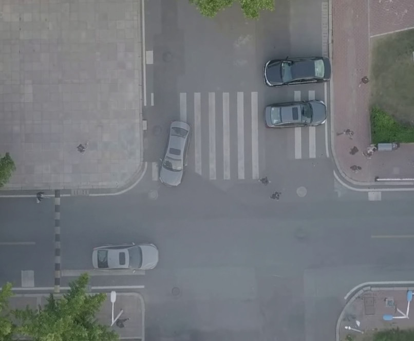
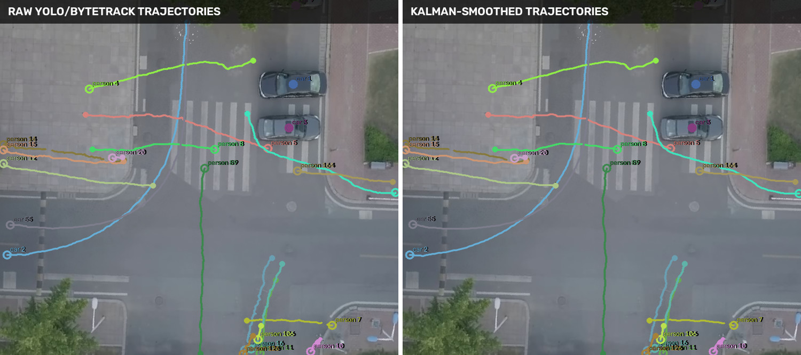
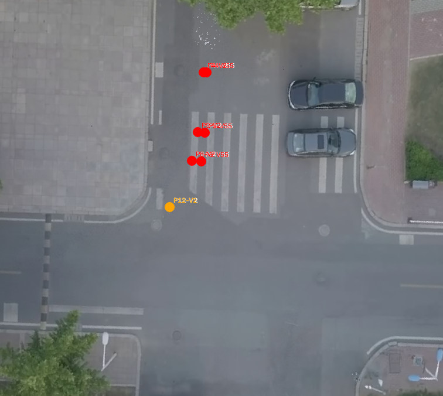
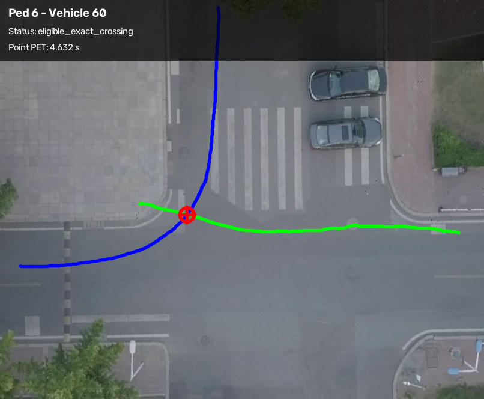
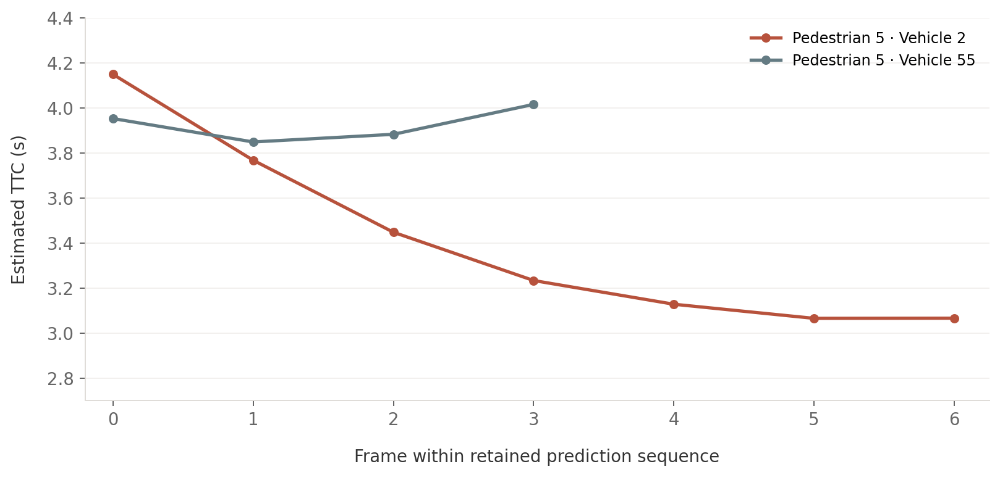

Can overhead traffic video be converted into consistent road-user trajectories and screened for potential pedestrian–vehicle conflicts?
This project developed a sequential video-analysis workflow using aerial recordings from the Vehicle–Crowd Interaction (VCI) – DUT Dataset. Three intersection recordings supported iterative method development; a fourth recording was used to examine the consolidated detection and trajectory-reconstruction sequence.
1. Detection and identity tracking
A fine-tuned YOLO detector and ByteTrack were applied to overhead video to identify pedestrians and vehicles across successive frames. The resulting track records contain object identities, frame numbers, bounding-box geometry, and detection confidence.

2. Trajectory refinement and quality control
Raw tracks were screened for short duration, weak detection confidence, near-static artifacts, and discontinuities. Candidate identity fragments were reviewed and repaired using temporal continuity, position, movement direction, and object-size consistency, with manual decisions retained where necessary.

3. Spatial calibration and motion smoothing
Road-user positions were transformed from image pixels into metric coordinates using scene-specific calibration. Background alignment and coordinate checks preceded class-aware Kalman filtering to reduce frame-to-frame noise in trajectories and derived motion estimates.


4. Interaction screening and conflict locations
Pedestrian–vehicle pairs were screened for overlapping observation periods and spatial proximity. Where the reconstructed paths intersected, a conflict point was identified from the trajectory segments; pairs without eligible path crossings or sufficient observation context were excluded from point-based PET estimation.

5. PET and TTC estimation
Post-Encroachment Time (PET) was calculated as the absolute difference between the estimated times at which the pedestrian and vehicle passed the same crossing point. Time-to-Collision (TTC) was assessed separately through short-horizon extrapolation of each road user's estimated footprint at that location; TTC was retained only when predicted overlap persisted over successive frames.


Output and scope
The three development recordings produced nine eligible point-based PET events. Two events met the persistent predicted-footprint-overlap criterion for TTC estimation. The fourth recording provided an additional check of detection, track continuity, and final trajectory reconstruction. These outputs demonstrate a working analytical sequence, not independently validated crash-risk classification; PET remains point-based and TTC depends on simplified footprint and motion assumptions.